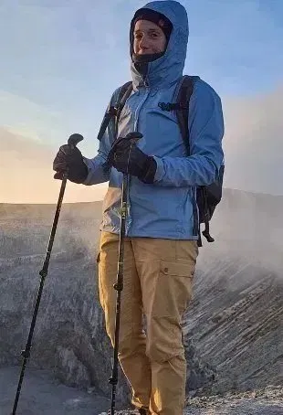
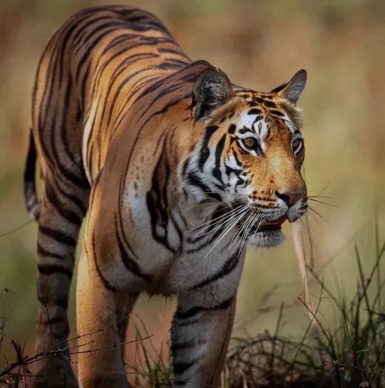

Wildlife Portfolio


Tour Design & Fotografie von Katrin Tschachler Berger
Willkommen bei KameraAbenteuer! Ich bin leidenschaftliche Fotografin und organisiere maßgeschneiderte Fotoreisen in die atemberaubendsten Regionen Afrikas.
Mit jahrelanger Erfahrung im Feld führe ich kleine Gruppen zu den besten Zeiten an die besten Orte, um das perfekte Licht zu garantieren.


Fokus auf Raubkatzen, Elefantenherden und die Kunst der Wildlife-Fotografie im afrikanischen Busch.

Erlebe die legendäre Masai Mara zur Zeit der großen Tierwanderungen.